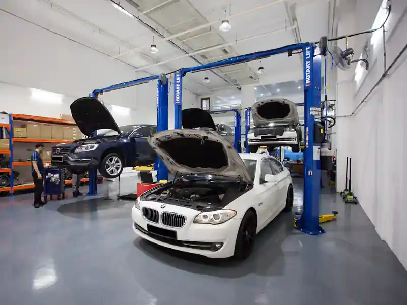

Featured (paid)Car workshops in Jalan Lam Huat and Carros Centre
Jalan Lam Huat, where Carros Centre stands, is an industrial road in the north-west of Singapore. SG Car Workshop lists 14 workshops here: SG Car Services, SCT Auto Services, JNK WORKSHOP, Major Autolution, RK One Stop Autohub, Nam Bee Trading, 98 Auto Werkz, HAHN AUTOMOTIVE, Cars N Such, J's Garage, Ah Song Motor, Chee Chai Motor Repairer, Finzeo Car and Jacky Gearbox.
About Jalan Lam Huat and Carros Centre
Jalan Lam Huat, where Carros Centre stands, is an industrial road in the north-west of Singapore.
SG Car Workshop lists the workshops it has for this area on one page, so you can compare services, open each workshop page for its address and contact details, and message a workshop directly on WhatsApp or by phone. Listings show general servicing and repair and gearbox repair. If you want to compare more options nearby, see Woodlands Industrial Park E9, Woodlands Avenue 12 (Polaris@Woodlands), Woodlands Close (MEGA@Woodlands), Yishun Industrial Park A, Yishun Industrial Street 1.
Featured (paid) in Jalan Lam Huat and Carros Centre
Paid placements, shown on their own. They are not part of any ranking or order on this page.
Workshops in Jalan Lam Huat and Carros Centre
Ranked by a combined score of Google rating and number of ratings, among the 12 workshops here with 20 or more Google ratings (the formula is on the About page). The others follow A to Z. Ratings and hours are from Google Maps.
Filter
Filters use the Google Maps hours we hold. Workshops without hours are hidden while a filter is on.
Basic listing
Servicing
SG Car Services
5.0 (523 Google ratings) (checked November 2026) See Google reviews
60 Jln Lam Huat, #04-29 Carros Centre, Singapore 737869
General servicing and repair
Ranked 1st of 12 Jalan Lam Huat and Carros Centre workshops with 20 or more Google ratings, by rating and number of ratings together
Customers mention: Mercedes-Benz cars, Car servicing, ABS repair
Basic listing
Servicing
SCT Auto Services
5.0 (65 Google ratings) (checked November 2026) See Google reviews
60 Jln Lam Huat, #05-06 Carros Centre, Singapore 737869
General servicing and repair
Ranked 2nd of 12 Jalan Lam Huat and Carros Centre workshops with 20 or more Google ratings, by rating and number of ratings together
Customers mention: Used car sales, Car trade-in, Car repair
Basic listing
Servicing
JNK WORKSHOP
5.0 (57 Google ratings) (checked November 2026) See Google reviews
60 Jln Lam Huat, #03-78 Carros Centre, Singapore 737869
General servicing and repair
Ranked 3rd of 12 Jalan Lam Huat and Carros Centre workshops with 20 or more Google ratings, by rating and number of ratings together
Customers mention: Car servicing, Error code diagnosis, Engine repair
Basic listing
Servicing
Major Autolution
4.9 (581 Google ratings) (checked November 2026) See Google reviews
60 Jln Lam Huat, #04-48 Carros Centre, Singapore 737869
General servicing and repair
Ranked 4th of 12 Jalan Lam Huat and Carros Centre workshops with 20 or more Google ratings, by rating and number of ratings together
Customers mention: Aircon servicing, Cooling coil replacement (Mercedes W213), Under-car inspection
Basic listing
Servicing
RK One Stop Autohub
5.0 (42 Google ratings) (checked November 2026) See Google reviews
60 Jln Lam Huat, #03-75, Singapore 737869
General servicing and repair
Ranked 5th of 12 Jalan Lam Huat and Carros Centre workshops with 20 or more Google ratings, by rating and number of ratings together
Customers mention: Car servicing, Suspension replacement, Radiator and water pump
Basic listing
Servicing
Nam Bee Trading
5.0 (20 Google ratings) (checked November 2026) See Google reviews
60 Jln Lam Huat, #05-43, Singapore 737869
General servicing and repair
Ranked 6th of 12 Jalan Lam Huat and Carros Centre workshops with 20 or more Google ratings, by rating and number of ratings together
Customers mention: Tyre replacement, Flat tyre help, Tyre upgrades
Basic listing
Servicing
98 Auto Werkz
4.9 (27 Google ratings) (checked November 2026) See Google reviews
60 Jln Lam Huat, #06-50/51 Carros Centre, Singapore 737869
General servicing and repair
Joint ranked 7th of 12 Jalan Lam Huat and Carros Centre workshops with 20 or more Google ratings, by rating and number of ratings together
Customers mention: Car servicing, Wheel alignment, Insurance claims
Basic listing
Servicing
HAHN AUTOMOTIVE
4.9 (27 Google ratings) (checked November 2026) See Google reviews
60 Jln Lam Huat, #05-13, Singapore 737869
General servicing and repair
Joint ranked 7th of 12 Jalan Lam Huat and Carros Centre workshops with 20 or more Google ratings, by rating and number of ratings together
Customers mention: Engine oil change, Car servicing, Car repair
Basic listing
Servicing
Cars N Such
4.8 (55 Google ratings) (checked November 2026) See Google reviews
60 Jln Lam Huat, #02-35/36, Singapore 737869
General servicing and repair
Ranked 9th of 12 Jalan Lam Huat and Carros Centre workshops with 20 or more Google ratings, by rating and number of ratings together
Customers mention: Fault light diagnosis, Older cars, Spray painting
Basic listing
Servicing
J's Garage
4.7 (41 Google ratings) (checked November 2026) See Google reviews
60 Jln Lam Huat, #03-48 Carros Centre, Singapore 737869
General servicing and repair
Ranked 10th of 12 Jalan Lam Huat and Carros Centre workshops with 20 or more Google ratings, by rating and number of ratings together
Customers mention: Honda cars, Japanese and continental cars, Engine rebuild
Basic listing
Servicing
Ah Song Motor
4.6 (48 Google ratings) (checked November 2026) See Google reviews
60 Jln Lam Huat, #04-55, Singapore 737869
General servicing and repair
Ranked 11th of 12 Jalan Lam Huat and Carros Centre workshops with 20 or more Google ratings, by rating and number of ratings together
Customers mention: Car servicing, Battery replacement, Aircon servicing
Basic listing
Servicing
Chee Chai Motor Repairer
3.8 (38 Google ratings) (checked November 2026) See Google reviews
60 Jln Lam Huat, #04-13 Carros Centre, Singapore 737869
General servicing and repair
Ranked 12th of 12 Jalan Lam Huat and Carros Centre workshops with 20 or more Google ratings, by rating and number of ratings together
Customers mention: Car servicing, Brake pads, Car repair
Basic listing
List your workshop
For business owners: is your workshop listed here? Claiming a listing is free.
Map of Jalan Lam Huat and Carros Centre
Approximate area map from OpenStreetMap. View a larger map. Use the Directions button on a workshop for its exact address.
Questions about Jalan Lam Huat and Carros Centre
Which car workshops are in Jalan Lam Huat and Carros Centre?
SG Car Workshop currently lists 14 workshops in Jalan Lam Huat and Carros Centre: SG Car Services, SCT Auto Services, JNK WORKSHOP, Major Autolution, RK One Stop Autohub, Nam Bee Trading, 98 Auto Werkz, HAHN AUTOMOTIVE, Cars N Such, J's Garage, Ah Song Motor, Chee Chai Motor Repairer, Finzeo Car and Jacky Gearbox. Each has its own page with services, address and contact details.
What car services can I find in Jalan Lam Huat and Carros Centre?
Listings here cover general servicing and repair and gearbox repair. Open a workshop page to see the services it lists.
How do I contact a workshop in Jalan Lam Huat and Carros Centre?
Tap WhatsApp or Call on a workshop card or page. WhatsApp messages are prefilled with the workshop name and say you found them on SG Car Workshop, so you only need to add your car and what you need.
What is near Jalan Lam Huat and Carros Centre?
Nearby MRT stations include Woodlands, Marsiling and Admiralty. Local landmarks include Causeway Point, Woodlands Checkpoint and Woodlands Waterfront Park.
Which region is Jalan Lam Huat and Carros Centre in?
Jalan Lam Huat and Carros Centre is in the North region of Singapore. Nearby areas on SG Car Workshop: Woodlands Industrial Park E9, Woodlands Avenue 12 (Polaris@Woodlands), Woodlands Close (MEGA@Woodlands), Yishun Industrial Park A and Yishun Industrial Street 1. Browse the North region page for more workshops.